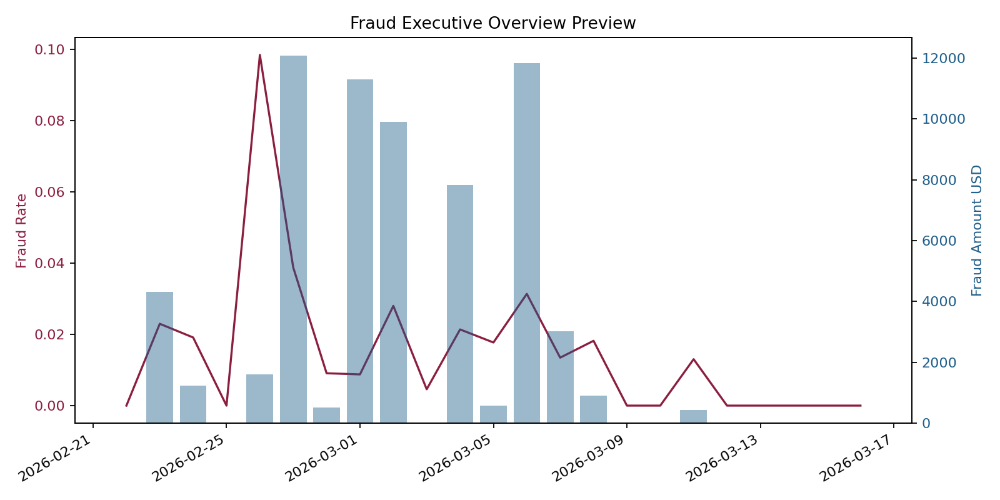
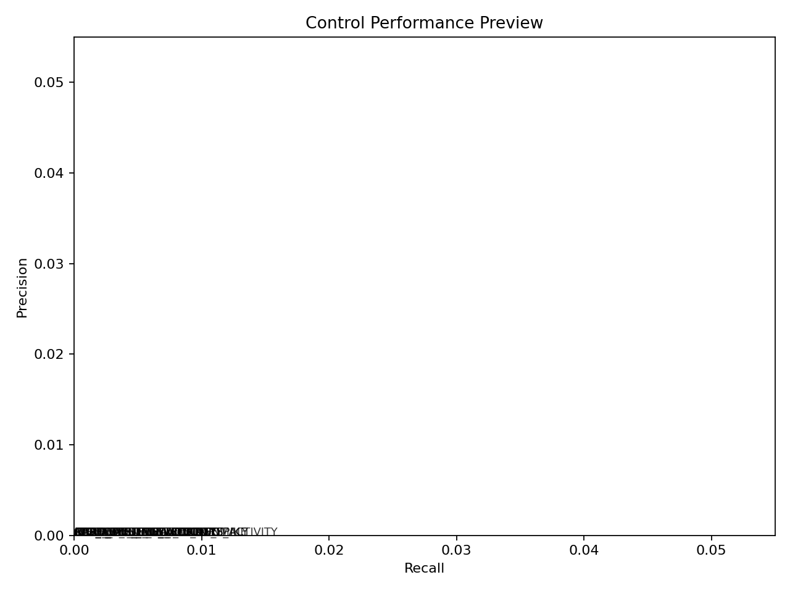
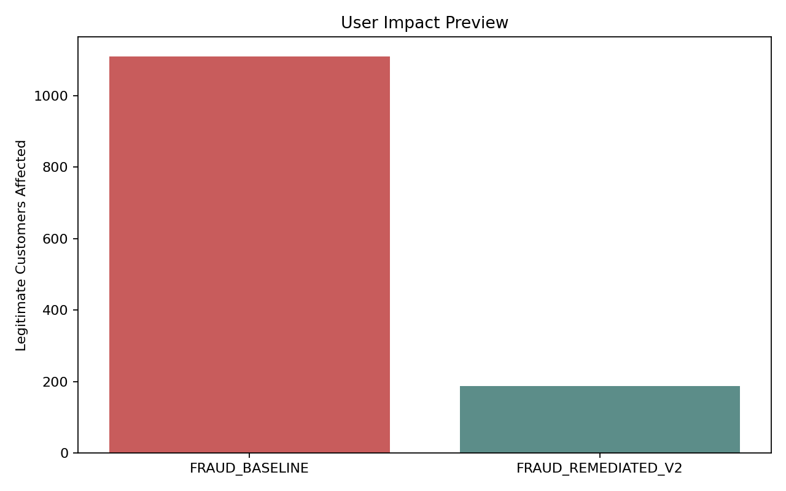
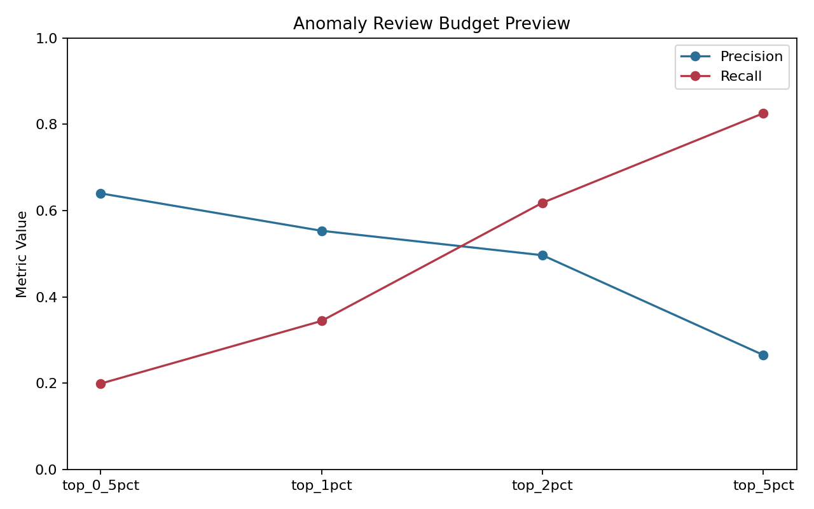
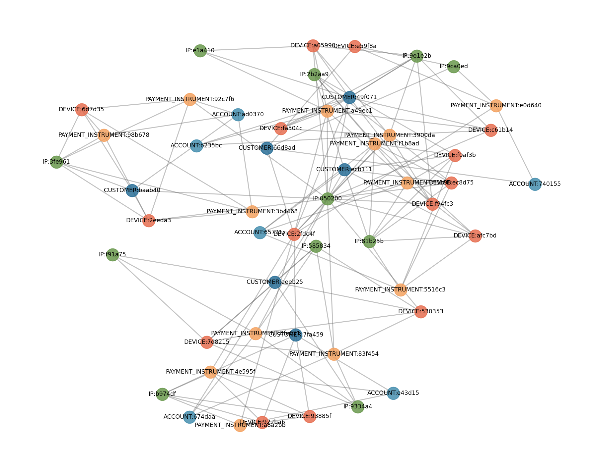

Python · SQL · Applied Analytics
Data Scientist
Consumer Analytics / Machine Learning
Focus Python, SQL, machine learning, demand forecasting, customer analytics, and business impact
I build independent data science projects with Python and SQL, applying machine learning to customer analytics and demand forecasting. My work connects feature engineering and model validation to clear, assumption-led business impact analysis.
Featured Web3 Project · Sepolia
TokenLab
An independently developed token-creation and blockchain-learning platform. Explore configurable ERC-20 workflows, read-only Sepolia token views, and interactive lessons through a responsive React and TypeScript application.
OpenZeppelin ERC-20 contracts
Hardhat development and tests
MetaMask, wagmi, and viem integration
Token management and interactive Academy
Educational Sepolia examples · not independently audited · no hosted demo
 Actual local application capture · read-only view
Actual local application capture · read-only view
Featured Case Study
FraudShield
End-to-end fraud analytics portfolio project built on synthetic payment data, versioned rules, investigations, graph analysis, and risk operations dashboards.
FraudShield uses synthetic transaction data. Its evaluation results are from reproducible portfolio experiments, not real customer activity or production employer systems.
FraudShield is a portfolio-scale fraud analytics environment that combines PostgreSQL, Python, fraud rules backtesting, analyst investigation workflows, graph-based fraud-ring exploration, and dashboard-ready marts for risk operations.
The focus was to show how a data and risk analyst can move from transaction-level events to decision support: what is firing, what is harming good users, which entities are linked, and where controls should be tuned next.
Baseline
Broad controls, higher false positives, limited investigation context.
Remediated
Backtested controls, lower customer friction, graph-assisted analyst review, and executive reporting.
Python
PostgreSQL
Advanced SQL
SQLAlchemy
Alembic
scikit-learn
NetworkX
Docker
pytest
Fraud Controls
Versioned rulesets, backtesting coverage, alert volume analysis, and threshold tuning.
Advanced SQL
Window functions, CTE-heavy analysis, risk marts, and analyst-focused investigation queries.
Fraud Investigation
Incident review, root-cause analysis, event timelines, and entity-level drill-downs.
User Impact
Measured friction, false positives, control overlap, and the tradeoff between catches and customer harm.
Advanced Analytics
Graph relationships, anomaly review flows, and behavior-driven fraud segmentation.
Risk Reporting
Executive overview, performance monitoring, operations mart design, and recruiter-ready dashboards.





Professional Experience
Operations Analytics and Decision Support
Professional experience in analytics, reporting, automation, and stakeholder support, distinct from independent portfolio fraud work.
Deputy Manager
WNS Global Services
- Led analytics reporting and business review workflows that translated operational data into decision-ready performance views.
- Built SQL, Excel, and dashboard-based reporting that improved metric visibility, stakeholder alignment, and issue tracking.
- Supported business teams with structured analysis, trend interpretation, and process improvement opportunities.
- Managed delivery quality across recurring reporting, stakeholder requests, and operational analysis needs.
Senior Analyst
WNS Global Services
- Built dashboards and recurring analysis for business KPIs, operational trends, and management reporting.
- Automated data preparation and report generation using SQL, Python, Excel, and BI tooling.
- Partnered with stakeholders to define metrics, improve data consistency, and shorten reporting turnaround time.
- Delivered analysis that supported pricing, performance monitoring, and day-to-day operational decisions.
Risk and Analytics Capabilities
Technical Skills
Technologies and practices demonstrated across independent software projects and professional analytics work.
Web3 and Smart Contracts
Frontend Development
Backend and Data Platforms
Analytics and Reporting
Testing and Tools
Transaction Velocity Analysis
Built transaction-level views that flagged repeat attempts, velocity bursts, and clustered suspicious behavior over short windows.
Fraud Control Evaluation
Compared rules by catch rate, review burden, and customer friction to show where tuning produced the best tradeoff.
Card-Testing Investigation
Structured investigation output around issuer, device, and velocity patterns to simulate analyst decision support.
Link Analysis
Mapped shared devices, cards, emails, and addresses into graph patterns that surfaced connected entities and likely fraud rings.
SQL and Analytics Highlights
Examples of the Analytics Work
Portfolio work centered on investigation-friendly SQL, operations marts, and control performance analysis.
Window Function Analysis
Used window functions to rank alerts, compare entity behavior across time, and isolate unusual payment spikes within merchant and user segments.
Investigation CTE Patterns
Built layered CTE-based queries that moved from raw transactions to reusable analyst views for incident deep dives and root-cause reviews.
Risk Operations Marts
Created marts for executive summaries, control monitoring, analyst queues, user impact reporting, and dashboard consumption.
Backtesting Support Queries
Measured alerts, approvals, declines, fraud capture, false positives, and review workload to compare rule versions on the same data.
Selected Projects
Consumer Analytics, Data Science and Software Projects
Independent projects across customer analytics, machine learning, forecasting, and software development.
Flagship Data Science Project · Synthetic Retail Data
Consumer Intelligence & Demand Forecasting Platform
An end-to-end Python portfolio project for customer segmentation, churn modeling, CLV and cohort analysis, and product-level demand forecasting. Includes time-aware feature engineering and validation, local PySpark and MLflow workflows, and assumption-based business impact scenarios.
Python
SQL
scikit-learn
PySpark
MLflow
FastAPI
Streamlit
Synthetic-data portfolio prototype. SQL examples have not been run against PostgreSQL; Databricks compatibility code has not been run on Databricks. Scenario figures are assumption-based, not measured business outcomes.
Optimization
Pricing Optimization Engine
Python-based pricing logic for evaluating historical demand and competitor context to produce data-backed recommendations.
Python
FastAPI
React
SQLite
Pandas
Analytics Enablement
AI Business Analyst
Natural-language-to-SQL workflow designed to help non-technical users retrieve structured business insights faster.
Python
LLM
SQL
API Design
Automation
Data Workflow Automation
Workflow automation work covering repeatable data preparation, transformations, and recurring reporting.
Python
SQL
Automation
Reporting
Web3 Learning and Token Tools
TokenLab
An independently developed Solidity and React platform for configurable ERC-20 workflows, Sepolia token management, and interactive blockchain learning.
Solidity
OpenZeppelin
Hardhat
React
TypeScript
Educational Sepolia project · not independently audited · no hosted demo
Mobile Application
AI Text Generator
A Flutter mobile application for generating short-form content through an API-backed workflow.
Flutter
Mobile
API Integration
Full-Stack SaaS
FlowCRM
A multi-tenant CRM project for managing organizations, sales pipelines, activities, and customer relationships.
Next.js
React
TypeScript
PostgreSQL
Prisma
AI Customer Support
SupportGPT
A support-platform project combining document-based knowledge retrieval, conversational assistance, ticket workflows, and analytics.
Next.js
Node.js
TypeScript
PostgreSQL
pgvector
Recruitment Platform
TalentFlow ATS
An applicant-tracking project for job and candidate pipelines, interview scheduling, resume parsing, and recruitment workflows.
Next.js
Express
TypeScript
PostgreSQL
Redis
About
From Analytics to Building Software
Professional experience in operations analytics; independent work across full-stack development, Web3, and data systems.
I’m Gaurav Sharma, a Deputy Manager at WNS Global Services with a professional background in operations analytics and reporting. My independent projects extend that problem-solving experience into full-stack applications, blockchain tooling, and data systems.
I work across React and TypeScript interfaces, Python APIs and analytics, and Solidity contracts built with OpenZeppelin. TokenLab brings those interests together in an educational ERC-20 and blockchain-learning platform.
My portfolio includes independent projects using synthetic or testnet data. They are learning and demonstration work, not claims about production customer outcomes.
Solidity, React, TypeScript, wallet-connected interfaces
Python, PostgreSQL, SQL, analytics and APIs
Operations analytics, reporting and stakeholder support
Contact
Let’s Build Something Useful
I’m open to conversations about full-stack, Web3, analytics, and data-focused opportunities.
Let us talk about the work.
For role inquiries, project discussions, or collaboration, reach me through email, LinkedIn, or GitHub.